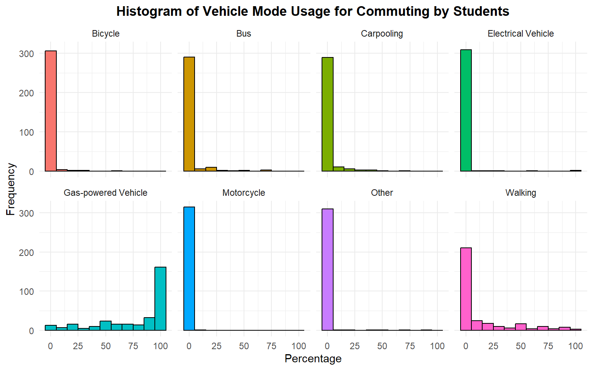
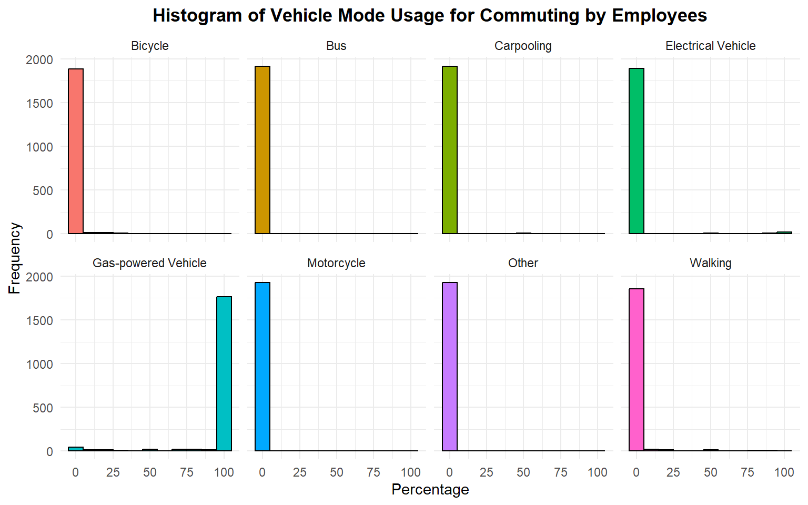
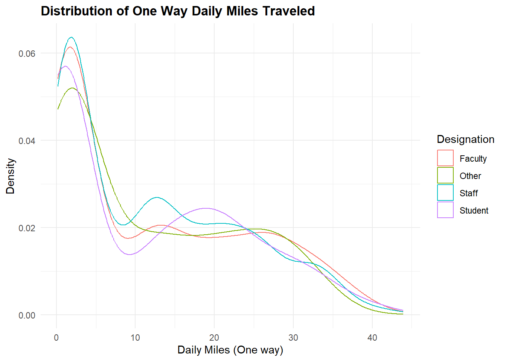

1. Introduction
Growing impacts of climate change have driven many worldwide companies and organizations to commit to carbon neutrality targets. Miami University (MU) is no exception, having submitted its Miami 2040 Climate Action Plan in May 2024 with the aim of achieving carbon neutrality on its Oxford campus by 2040. This plan builds on over a decade of commitment, as MU has been taking steps to reduce its carbon footprint since 2008. A significant component of this initiative is reducing emissions generated from employee and student commuting. MU has set ambitious targets, including reducing student commuting emissions by 50% by 2030 and 90% by 2040, while faculty and staff commuting emissions are also slated for a 90% reduction by 2040.
This project, in line with President Crawford and the University Climate Action Plan, aims to analyze commuting patterns among MU employees and students. By estimating weekly and yearly commuting mileage and gasoline consumption for fiscal year 2023, the project aims to provide actionable insights intro transportation-related emissions at MU and support the institution’s broader sustainability goals.
2. Methodology
2.1. Data
The project utilizes two datasets, one for students and one for employees, both sourced from an optional survey included with the on-campus parking permit application. For fiscal year 2023, a total of 3,937 permits were issued for staff/faculty and 3,501 for students (537 of which were off-campus residents). This survey is designed to assess commuting patterns based on respondents’ home addresses, commute frequency, and the modes of transportation they use. The mileages were calculated using GIS based on the provided addresses. Those whose home addresses are more than 45 miles from campus (90 miles in a round trip) were removed from the data.
The employee dataset contains 1976 rows and 15 variables, which are described as follows:
DESIGNATION: The position or role of the person who completed the surveycommute_days_fall_spring: Number of days per week the employee commutes to the Oxford campus during the Fall/Spring semestersremote_days_fall_spring: Number of days per week the employee works remotely during the Fall/Spring semesterscommute_days_summer_jterm: Number of days per week the employee commutes to the Oxford campus during Summer/J-termremote_days_summer_jterm: Number of days per week the employee works remotely during Summer/J-termcommute_gaspowered_100pct_time: Whether the employee exclusively commutes using gas-powered vehiclesdrive_gas: Percentage of total commuting time the employee uses a gas, hybrid electric, or diesel vehicledrive_electric: Percentage of total commuting time the employee uses an electric vehiclewalk: Percentage of total commuting time the employee walks to the Oxford campusbicycle: Percentage of total commuting time the employee uses a bicycle or other non-motorized meansBCRTAbus: Percentage of total commuting time the employee uses the BCRTA Buscarpool_as_passenger: Percentage of total commuting time the employee vanpools or carpools as a passengerdrive_motorcycle: Percentage of total commuting time the employee drives a motorcycle, scooter, or mopedother: Percentage of total commuting time the employee uses other transportation methods not listed abovedaily_miles_one_way: The one-way distance, in miles, the employee travels to the Oxford campus each day
The student dataset contains 319 observation and 14 variables, which are described as follows:
DESIGNATION: The position or role of the person who completed the surveylive_on_campus_in_2021_2022: Whether the student lived on campus in the 2021-2022 academic yearcommute_days_fall_spring: Number of days per week the student commutes to the Oxford campus during the Fall/Spring semesterscommute_days_jterm: Number of days per week the student commutes to the Oxford campus during J-termcommute_days_summer: Number of days per week the student commutes to the Oxford campus during Summerwalk: Percentage of total commuting time the student walks to the Oxford campusdrive_gas: Percentage of total commuting time the student uses a gas, hybrid electric, or diesel vehicledrive_electric: Percentage of total commuting time the student uses an electric vehiclebicycle: Percentage of total commuting time the student uses a bicycle or other non-motorized transportationBCRTAbus: Percentage of total commuting time the student uses the BCRTA buscarpool_as_passenger: Percentage of total commuting time the student carpools or vanpools as a passengerdrive_motorcycle: Percentage of total commuting time the student uses a motorcycle, scooter, or mopedother: Percentage of total commuting time the student uses other transportation methods not listed abovedaily_miles_one_way: The one-way distance, in miles, the student travels to the Oxford campus each day
Pre-processing is necessary to address data quality issues identified in the survey responses. Since this project focuses on commuting to the Oxford campus, observations from students and employees who reported zero weekly commuting were excluded from the analysis, even if they reported travel mileage. In the original survey, respondents were asked to report the percentage of total time they use each mode of transportation. This led to inconsistencies, as some respondents interpreted the question differently, resulting in total percentages that did not sum to 100%. Specifically, in the student dataset, 13 rows had totals either exceeding or falling short of 100%, with 4 rows reporting 0%. Similarly, in the employee dataset, 22 rows did not total 100%, with 4 also reporting 0%. To resolve this, for rows where the total percentage was not 0%, the percentages for each mode of transportation were rescaled proportionally to sum to 100%.
After rescaling, 1 row in the student data and 3 rows in the employee data still did not sum to 100%, as these respondents did not provide specific ratings for vehicle usage. While this does not impact mileage estimation, it may introduce uncertainty when estimating gas usage. Consequently, these observations were excluded from gas mileage estimates. Additionally, 7 rows in the employee data lack information on vehicle breakdown and whether gas-powered commuting occurred 100% of the time. Although these rows can still be used to estimate mileage due to known commuting days, again, they were excluded from gas mileage estimates due to insufficient data.
Another issue found in the employee dataset involved discrepancies between the respondents’ answers. Some employees indicated they did not always commute using gas-powered vehicles but later reported using gas-powered vehicles 100% of the time. In such cases, their initial response was corrected to “Yes.” For respondents who answered “Yes” but did not provide a breakdown of transportation modes, their drive_gas percentage was set to 100%, and all other transportation modes were set to 0%.
In the employee data, there are columns for remote days and commute days. However, in some instances, the sum of remote and commute days exceeds 5, which may indicate either a misunderstanding of the survey or a hybrid working arrangement. Given that the survey primarily focuses on commuting, only the commute days column was used for analysis.
2.2. Statistical Analysis
The survey included various modes of travel: driving (gas, hybrid electric, or diesel-powered vehicles), driving (plug-in electric vehicles), walking, bicycling or other non-motorized means, BCRTA bus, vanpooling/carpooling as a passenger, motorcycle, scooter or moped, and other. Since walking is not typically considered a commuting method, it was excluded from the total commuting percentage by subtracting the proportion of walking days from the total commute days to calculate adjusted commute days per week. When calculating weekly commuting mileage, it’s essential to account for the different number of weeks in a term. As such, each individual’s commuting frequency in a week was adjusted using a weighted average of the number of weeks across all terms (Fall, Spring, Summer, and J-term). The weekly commuting mileage for any respondent was then by calculated by multiplying the daily one-way miles traveled by 2, then by the adjusted number of days they commute in a week. To get an yearly estimate, there was no need to adjust for the commuting frequency in a week. It was calculated as the sum of the number of miles a person travels each Fall, Spring, Summer, and J-term semester, which was the daily one-way miles traveled times 2 times the number of days they travel in a week and times the number of weeks in a semester. There are 30 weeks in the Spring and Fall terms, excluding breaks for Fall, Thanksgiving, and Spring. The J-term is typically 4 weeks, while the Summer term is 12 weeks long. It is assumed that employees and students commute consistently, including in the finals week. The same procedure applies to both student data and employee data. To get a population estimate, the sum of miles for the sample was divided by the sample size and then multiplied by the population size. For the student data, the population of 537 off-campus students was used instead of 3,501 students because the sample student data only concerns off-campus students, so it would be more reasonable to try to generalize this to a population of students that also live off-campus.
For estimating gasoline usage, only gas-powered vehicles and motorcycles were included in calculations. It is assumed the stakeholders would be more interested in personal vehicle gas consumption, so public types of commuting such as BCRTA buses or carpooling were not considered, even if they also use gas. Additionally, the nature of these types of transportation poses significant challenges to estimating gasoline usage with the limited information available: It is unknown if a person carpools in another person’s car that also commutes to MU (which would double count towards the estimate) or just drops them off at MU (which would not count towards the gasoline estimate). There is no way to know about this from the survey. Meanwhile, buses operate independently of passenger numbers and are available to everyone, so calculating gasoline usage for buses separately would be more accurate. Even then, lack of information such as how many buses are deployed at a time, bus model, or bus route (can be roughly traced and calculated) makes it difficult to give an accurate estimate (It was later revealed that the BCRTA buses are not included in MU’s carbon footprint as they don’t operate under MU). The procedure for estimating weekly and yearly gasoline usage is the same as estimating commuting mileage for both students and employees, but to determine students’ and employees’ mileage for gas-powered vehicles and motorcycles, miles traveled need to be converted to gallons. According to the U.S. Department of Energy, the average miles per gallon (MPG) for motorcycles is 44, and for cars, it is 24.4. Moreover, the US Environmental Protection Agency estimates that each gallon of gasoline produces approximately 8,887 grams of \(CO_2\). To convert gasoline usage to metric tons of \(CO_2\), the total \(CO_2\) emissions in grams was divided by 1,000,000.
While not required, it is crucial to know how the estimates may vary. To obtain standard errors for the population estimates, a bootstrapping method proposed by Min-Te Chao and Shaw-Hwa Lo (1985) was employed, which is suitable when the population size is known. This method calculates the ratio of the population size to the sample size, defined as \(k\). A bootstrap population is then created by repeating each sample from the original data \(k\) times, resulting in a larger dataset. Random samples are taken from this new dataset to form the bootstrap samples. By repeatedly sampling and calculating different population total estimates from these resamples, the standard error of the population total can be determined.
If \(k\) is an integer, the bootstrapping procedure is implemented as described. However, if \(k\) is not an integer, the nearest integers below and above \(k\) are identified, referred to as \(k_1\) and \(k_2\). Bootstrap populations are created for both \(k_1\) and \(k_2\), denoted as \(N_1\) and \(N_2\). During each bootstrapping round, either \(N_1\) or \(N_2\) is randomly selected as the bootstrap sample, with the selection probability weighted by how close \(k\) is to \(k_1\) or \(k_2\).
2.3. Software
All data analysis tasks were performed using R version 4.3.1, along with additional packages, which are cited in the reference section.
3. Results
3.1. EDA
First, let’s examine the distribution of usage frequency in percentage for each vehicle type. Among students, the data reveals a predominant reliance on gas-powered vehicles, which is expected given that this information is collected during parking permit applications on campus. Interestingly, there is also a notable frequency of students walking to campus, surpassing the usage of other transportation modes such as bicycles, buses, and carpooling.
The same pattern can be observed for data related to employees where gas-powered vehicles is the most common and also the only means of transportation. The variability in transportation choices is limited, as employees typically have more housing options than students, allowing them to live farther from the main campus. Consequently, gas-powered vehicles tend to be the most practical choice for commuting. Additionally, the low usage of electric vehicles can be attributed to their relative scarcity compared to gas-powered vehicles, as well as the lack of supporting infrastructure in the Oxford area.

Looking at the distribution of daily miles driven one way, it can be seen that most people are within 5 miles of the campus. Fewer people travel more than 10 miles per day. It’s notable that the daily travel mileage distributions for students and employees are quite similar.

3.2. Estimate Construction
3.2.1 Breakdown of weekly and annual commuting mileage by demographics
| Weekly | Yearly | |||
|---|---|---|---|---|
| Total Miles | SE | Total Miles | SE | |
| Employee | 365,037.02 | 5,972.42 | 16,791,704.16 | 280,047.43 |
| Student | 38,717.44 | 1,395.23 | 1,781,003.57 | 64,251.94 |
It can be seen that employees generally travel more than students, with weekly travel nearly 10 times greater and yearly travel about 15 times higher. This difference is understandable given that there are approximately 3,937 employees with parking permits compared to 537 off-campus students with parking permits. With around 7 times more employees than students and yet more than 10 times higher travelling distances, it is reasonable to say that employees have higher travel mileage than students do.
3.2.2. Breakdown of weekly and annual commuting gas usage by demographics
| Weekly | Yearly | |||||||
|---|---|---|---|---|---|---|---|---|
| Gasoline Usage | SE | Emitted CO2 (mt) | SE | Gasoline Usage | SE | Emitted CO2 (mt) | SE | |
| Employee | 14,609.80 | 244.79 | 129.86 | 2.24 | 672,051.49 | 11,402.69 | 5,972.51 | 100.15 |
| Student | 2,320.91 | 85.82 | 20.63 | 0.74 | 70,017.06 | 2,471.47 | 622.25 | 22.56 |
Again, total gas consumption and CO2 emissions are higher for employees than for students, reflecting the larger employee population. Employees’ weekly gas consumption and CO2 emissions are generally about 7 times higher than those of students, while yearly totals are approximately 10 times greater. This disparity is not unusual, as many students do not commute during the summer and J-terms, whereas employees, particularly staff, continue to work during these periods.
3.2.3. Total weekly and annual commuting mileage, gas usage, and CO2 emissions for all commuting employees and students
The following table provides an estimate of commuting mileage, gas usage, and CO2 emissions of all employees and students who applied for a parking permit on campus. This information can be compared to prior years’ statistics to gain an understanding of how well Miami University is doing on its road to carbon neutrality by 2040.
| Weekly Estimate | SE | Yearly Estimate | SE | |
|---|---|---|---|---|
| Total Mileage | 401,900.36 | 6,199.55 | 18,487,419.30 | 280,771.04 |
| Total Gasoline Usage | 16,986.32 | 267.12 | 738,399.80 | 11,396.16 |
| Total CO2 Emission (Grams) | 150.99 | 2.28 | 6,562.17 | 99.49 |
4. Conclusion
Estimates of commuting mileage, gasoline consumption, and CO₂ emissions were calculated for Miami University’s employees and students, along with specific breakdowns for each group.
However, these estimates are based on several assumptions due to data limitations. For instance, it is assumed that walking is not typically considered a form of commuting, so reported daily one-way miles exclude walking distances. Additionally, only motorcycles and gas-powered vehicles are included in gasoline consumption estimates, as relevant data, like gasoline consumed per miles, is available for these modes, and it is assumed that the focus is on gasoline use for personal vehicles. Consequently, other transportation modes, such as the BCRTA bus or carpooling, are not considered due to complications in estimating their mileage and their non-personal nature. Finally, a major caveat with this data is that it comes from an optional, non-random survey, raising questions about what population it truly represents. While the sample size is large, it does not necessarily reflect the characteristics of the overall commuting population. Consequently, any estimation method — no matter how rigorous — is inherently speculative because the underlying data does not provide a valid basis for inference about the broader population.
5. References
Meikle, S. (2023, October 5). Miami University commits to carbon neutrality by 2040. Miami University. https://miamioh.edu/news/2023/10/miami-university-commits-to-carbon-neutrality-by-2040.html
Emissions from Commuting and University-Financed Travel | Climate Action Plan. (2024). Miami University. https://miamioh.edu/about/sustainability/climate-action-plan/goals-targets/commuting-emissions-university-financed-travel.html
Chao, M.-T., & Lo, S.-H. (1985). A Bootstrap Method for Finite Population. Sankhyā: The Indian Journal of Statistics, Series A (1961-2002), 47(3), 399–405. http://www.jstor.org/stable/25050557
R Core Team. (2024). R: A language and environment for statistical computing [R software]. R Foundation for Statistical Computing. https://www.R-project.org/
Auguie, B. (2017). gridExtra: Miscellaneous functions for “Grid” graphics (R package version 2.3). https://CRAN.R-project.org/package=gridExtra
Iannone, R., Cheng, J., Schloerke, B., Hughes, E., Lauer, A., Seo, J., Brevoort, K., & Roy, O. (2024). gt: Easily create presentation-ready display tables (R package version 0.11.0). https://CRAN.R-project.org/package=gt
Mock, T. (2023). gtExtras: Extending ‘gt’ for beautiful HTML tables (Version 0.5.0) [R package]. CRAN. https://CRAN.R-project.org/package=gtExtras
Wickham, H. (2016). ggplot2: Elegant graphics for data analysis [R package]. Springer-Verlag. https://ggplot2.tidyverse.org
Wickham, H., Averick, M., Bryan, J., Chang, W., McGowan, L. D., François, R., Grolemund, G., Hayes, A., Henry, L., Hester, J., Kuhn, M., Pedersen, T. L., Miller, E., Bache, S. M., Müller, K., Ooms, J., Robinson, D., Seidel, D. P., Spinu, V., Takahashi, K., Vaughan, D., Wilke, C., Woo, K., & Yutani, H. (2019). Welcome to the tidyverse. Journal of Open Source Software, 4(43), 1686. https://doi.org/10.21105/joss.01686
Wickham, H., Vaughan, D., & Girlich, M. (2024). tidyr: Tidy messy data (R package version 1.3.1). https://CRAN.R-project.org/package=tidyr
National Highway Traffic Safety Administration. (2023, June). Traffic safety facts: Motorcycles 2021 data (DOT HS 813 466). U.S. Department of Transportation. https://crashstats.nhtsa.dot.gov/Api/Public/ViewPublication/813466.pdf
U.S. Department of Energy. (2024, January). Average fuel economy by major vehicle category. Alternative Fuels Data Center. https://afdc.energy.gov/data/10310
U.S. Environmental Protection Agency. (n.d.). Greenhouse gas emissions from a typical passenger vehicle. EPA. https://www.epa.gov/greenvehicles/greenhouse-gas-emissions-typical-passenger-vehicle